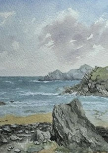

Bryn Humphreys

Mae fy stiwdio wedi’i lleoli yn yr ardd a dyna lle rydw i’n gweithio ac yn arddangos fy nghelf.
Rwy’n paentio tirluniau o Ynys Môn a Gwynedd mewn acrylig, olew a dyfrlliw a minnau hefyd yn ymgymryd â chomisiynau
My studio is situated in the garden and it’s where I work and display my art.
I primarily paint landscapes ofAnglesey and Gwynedd in acrylic, oil and watercolour and I also undertake commissions.
07445 379831
brynhumphreys@hotmail.com
www.artfinder.com/artist/brynhumphreys
SARYM, PORTH Y FELIN, HOLYHEAD, LL65 1BG
A55 i Gaergybi ar hyd Land’s End Road, dilyn yr arwyddion twristaidd gwyn ar frown am y Marina, ar hyd y promenâd, i’r chwith ger y Boathouse Hotel yn y pen draw, o dan y bont, ac mae’r stiwdio ar y dde 150 llath.
A55 Holyhead, along Land’s End Road, follow Tourist white on brown signs for Marina, along promenade, at end left by Boathouse Hotel, under bridge, studio on right 150 yds.